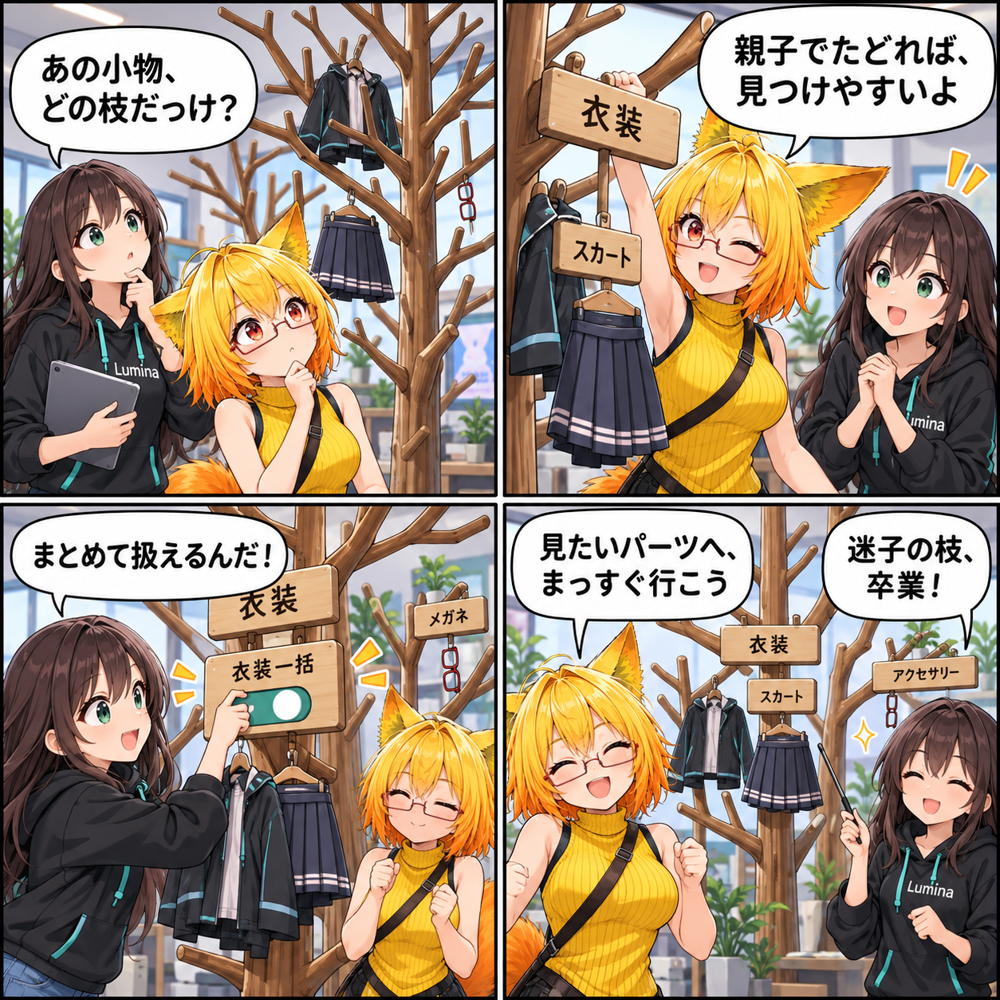

見つけたいパーツへ、階層をたどる日
衣装の中のスカート、アクセサリーなど、アバターの見せ方を調整するときは、目当てのパーツへ迷わず進みたいものです。VRASでは、Rendererがある枝だけを残した階層ツリーとして、パーツ一覧をたどれるようにしました。

見せたい枝だけを、残す
今回追加したパーツツリーは、Avatar Hierarchy全体をそのまま並べるのではなく、Rendererがある枝だけをたどる構造です。衣装やスカートグループなどの親子関係を残すため、アバターの中でパーツがどこに置かれているかを一覧から追えます。
一方で、SkinnedMeshRendererの骨として使われるTransform自体は、パーツ一覧の行から外します。骨の配下にあるアクセサリーなどのRendererは近くのグループへ接続して残すので、必要な見せ方の操作先を失わず、骨の行だけで一覧が埋まることも避けます。
グループから、まとめて扱う
グループは配下にあるRendererを把握します。デスクトップのパーツ一覧では、グループを開閉し、グループ単位で表示を切り替えられます。グループ行には配下の表示数も示します。
検索中は一致する場所を追えるよう階層を展開します。また、布パーツ指定モードでも同じ階層表示を使うようそろえ、グループ配下をまとめて布パーツとして指定できるようにしました。
階層が残ることを、テストで確認
回帰テストでは、OutfitとSkirtGroupがグループとして残り、骨であるHipsとHeadが一覧へ出ないことを確認します。同時に、Jacket、Skirt、Glasses、SkinnedMeshRendererはパーツとして残ること、グループが配下のRendererを保持することも対象にしました。
ここで記しているのは期間内のコミット済みコードとテストコードの内容です。日記制作中にUnity実行、VR実機、実際のアバターでの動作確認や性能計測は行っていません。
ほかにも進んだこと
同じ期間には、AV3 RuntimeとエディタUIのホットパス最適化も入りました。今回は、衣装やアクセサリーを調整するときの手がかりとして伝わりやすい、階層パーツツリーを主題にしています。
4コマの裏話
枝分かれした衣装ラックを使い、小物を探すところから、衣装とスカートの枝をたどる流れを描きました。物理的なラックと札は階層・グループ操作を表す比喩で、実際のアプリ画面ではありません。
まとめ
Rendererのある枝を中心に階層を残すことで、アバターの構造を見失わずに目当てのパーツへ進めます。骨の行を避けつつアクセサリーを残し、デスクトップと布パーツ指定モードで同じツリーを使う土台を整えました。
本日のひとこと
見たいパーツへ、まっすぐ行こう。